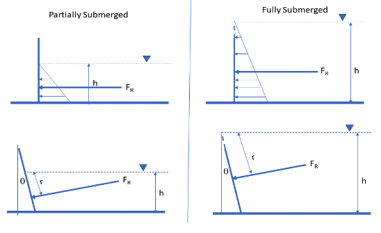

2. Hydrostatic Forces and Buoyancy#
(This is a copy of the instructor notebook from Dr. Cleveland’s website)
Archimedes principle to measure buoyant forces#
The Archimedes’ principle states when a solid object is com- pletely immersed into a fluid (say water), the volume of the fluid displaced is equal to the volume of the object. When an object is partially displaced then the volume of the water displaced is equal to the volume of the portion of the object that is immersed.
Archimedes principle is useful to find the volume of irregularly shaped objects - Simply submerge them into a liquid and measure the volume displaced.
A more detailed representation is
when a solid object is fully or partially submerged into a liquid then the upward buoyant force exerted by the liquid on the object is equal to the weight of the liquid displaced by the object. Mathematically, this can be stated as:
where, \(V_f\) is the volume of the liquid displaced m3, \(\rho\) is the density of the liquid (\(\frac{\)kg}{m^3}\(), \)g\( is the gravitational acceleration and \)B\( is the buoyant force (\)N\() and \)W_f\( is the weight of the displaced liquid (\)N$).
Consider a submerged object shown in the Figure below.

The weight of the object causes the body to sink into the liquid, while the upward buoyant force tries to push it up. If the object does not sink further (or raise) then these forces are balanced.
For a submerged object, the volume of the object equals the volume of the liquid displaced.
Therefore, the resultant force can be written as: $\(B - w_o = (\rho_{f} - \rho_{o}) V_{o} g\)$
Where, \(B\) is the buoyant force (\(N\)), \(w_o\) is the weight of the object (\(N\)), \(\rho_f\) is the density of the liquid,\(\rho_o\) is the density of the object, \(g\) is the gravitational acceleration and \(V_o\) is the volume of the object.
From, Archimedes Principle, the Buoyant force (B) is equal to the weight of the liquid displaced. From the equation above, we can say an object will be pushed upward if \(\rho_f\) is greater \(\rho_o\) or sink (pushed downward) when \(\rho_f\) is smaller than \(\rho_o\).
Note
It is important to remember that when an object sinks to the bottom of the liquid in a container, there is still a buoyant force acting on it. This buoyant force is still equal to the weight of the liquid that is displaced. However, the upward buoyant force exerted on the object is insufficient to overcome the downward gravitational force which causes the object to sink. In this situation, as the object is fully submerged, the volume of the object is equal to the volume of the liquid displaced. The object will feel lighter than in air due to buoyancy.
When an object is floating on a surface (neither raising or sinking) then the volume of the liquid displaced by the object is not equal to the volume of the object. It is only equal to the volume of the object that is submerged in the liquid. However, the upward buoyant force of the liquid exactly balances the weight of the object. Also, from Archimedes principle, the buoyant force is equal to the weight of the liquid that is displaced. Mathematically,
\(B-w_0 = 0\)
\( \rho_f V_f g = \rho_o V_o g\)
\(\frac{V_o}{V_f} = \frac{\rho_f}{=rho_o}\)
Forces on partially submerged plane surfaces#

The force exerted by liquids on surfaces they come to contact with is im- portant when determining engineering structures to hold uids (e.g., tanks, reservoirs). If water is our liquid of interest, then the hydrostatic pressure exerted by the liquid varies linearly with depth. It is equal to zero gage pres- sure when the water is open to atmosphere and increases downward (see the Figure below).
For engineering design, we replace the pressure distribution with a resultant hydrostatic pressure acting at the centroid. This resultant force is obtained by multiplying the hydrostatic pressure with the cross-sectional area over which the liquid exerts the pressure. The pressure is assumed to act normal to this planar area. The point where the resultant pressure (force) is assumed to act is also referred to the center of pressure (see Figure above). The center of the pressure is defined as “the point in a plane at which the total liquid thrust is be acting normal on that plane”.
The sketch below show the apparatus which permits the moment caused by the total liquid thrust on a wholly or partially submerged plane surface to be measured directly and compared with theoretical analysis.

The photograph below illustrates the apparatus set up in the laboratory

The following analysis is applied to the general condition of plane surface at various angles when it is wholly or partially submerged in a liquid. Consider an element at an inclined depth \(y\) and height \(\delta y\).
The force on this infinitesimal (itty-bitty) element can be written as:
Where, \(\gamma_w\) is the weight per unit volume of the liquid , \(W\) is the width of the plane normal to the direction of the force and \(h\) is the height to the water surface measured from the pivot point O (see the apparatus sketch).
The moment of force on element about the point O, \(\delta M\) can be written as
The total moment (M) over the entire submerged surface can be obtained by integrating:
The limits of integration in 8 depends upon whether the plane is fully sub- merged or partially submerged. For the fully submerged case, the limits are from R1 to R2 and the equation for the moment around point O can be written as:
This equation is of the form of y = mx + b,therefore, a plot of M against h will yield a straight line of gradient
This slope can be used to calculate the unknown specific weight \(\gamma_w\).
For a partially submerged plane, the limits of the integration are from \(R_2\) to \(hsec(\theta)\). The moment in this case is given as:
A plot of \(M + \frac{\gamma_w W R_2^2 h}{2}\) versus \(h^3\) will result in a straight line plot.